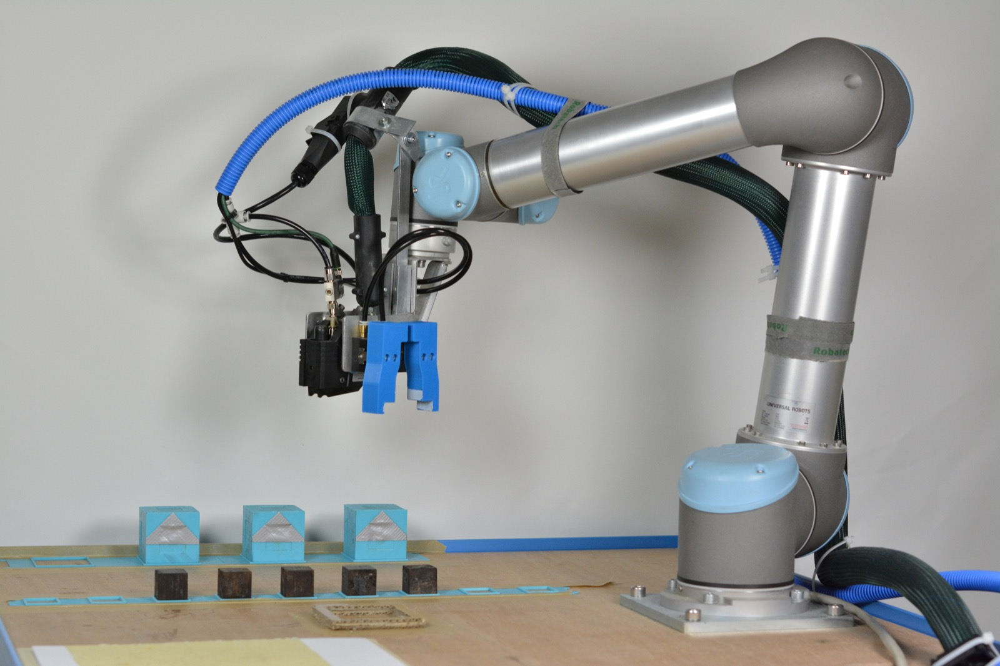
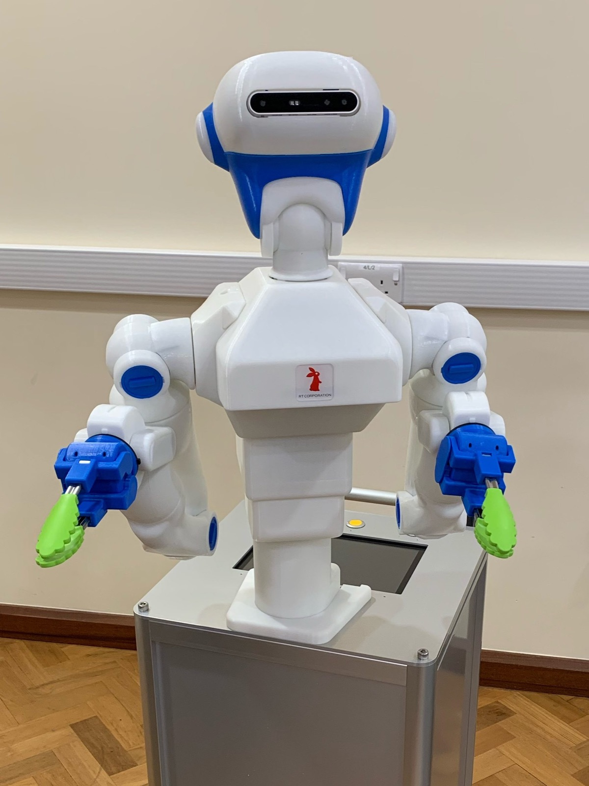
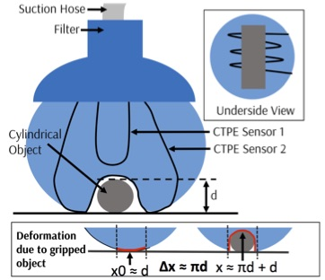
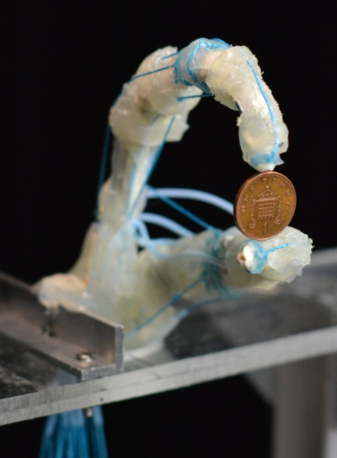
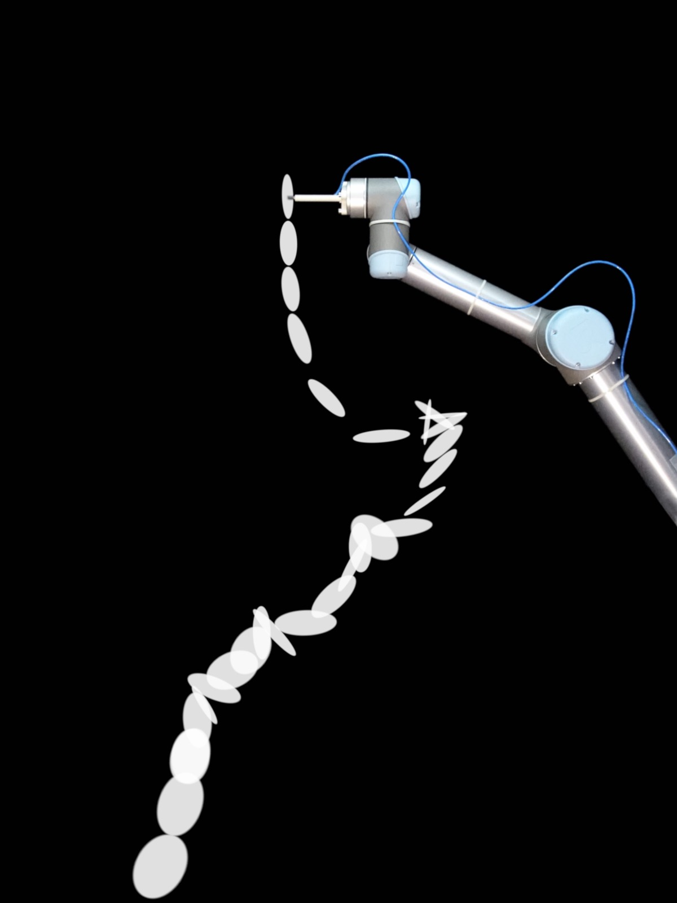
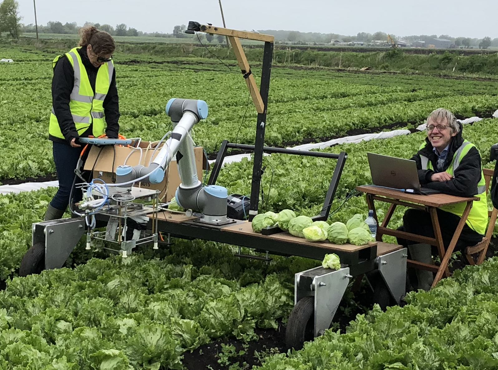
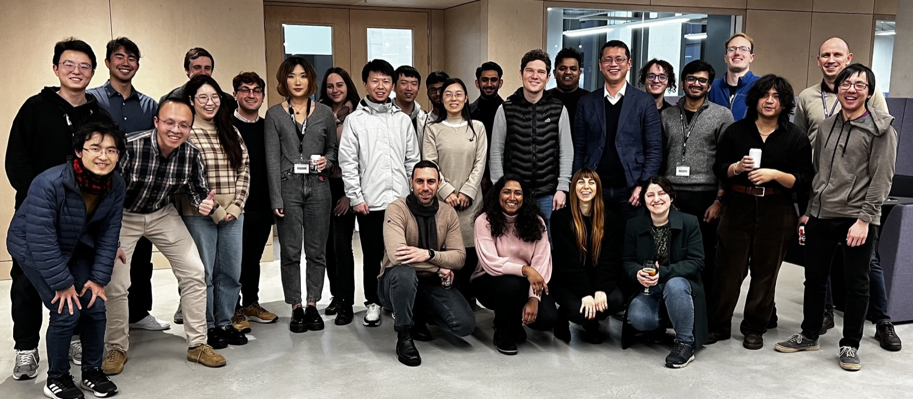
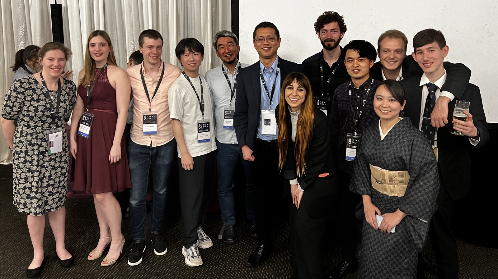
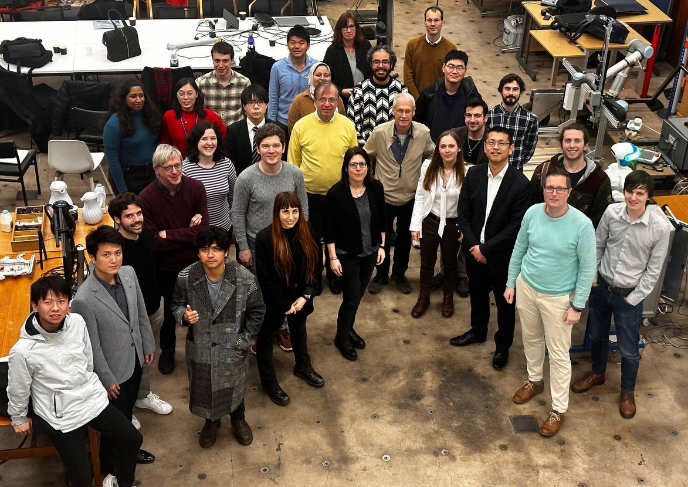

01
身体知能
物理的な相互作用は、学習をどのように支えるのでしょうか。自己組織化、身体を活かした計算、自らの身体設計を適応させるロボットを研究します。
TOKYO / CAMBRIDGE
身体・素材・環境が知能をどのように形づくるのかを探究しています。ロボットをつくり、実験することで、適応的な振る舞いの原理を明らかにします。
東京大学工学系研究科 精密工学専攻
ケンブリッジ大学工学部

01 / 研究
ロボティクスと生物学をつなぐ、三つの研究テーマ。

01
物理的な相互作用は、学習をどのように支えるのでしょうか。自己組織化、身体を活かした計算、自らの身体設計を適応させるロボットを研究します。

02
ロボットは、触れることで何を知るのでしょうか。変形するセンサと柔らかな素材を通じて、物理的な相互作用を知覚や制御へと結びつけます。

03
身体は、巧みな動作をどのように可能にするのでしょうか。生物に着想を得た機械設計を通じて、移動運動、柔軟なハンド、食品のハンドリングを研究します。
実験と応用


研究の現場から
02 / メンバー
飯田史也が率いる、東京とケンブリッジの現在のメンバーです。

研究代表者
東京大学 / ケンブリッジ大学
工学系研究科 精密工学専攻
工学部
03 / 論文
身体を活かした制御、柔軟なセンシング、物体操作、移動運動に関する六つの研究。
Science Robotics
Communications Engineering
Science Robotics
Materials Today Electronics
Advanced Intelligent Systems
Advanced Intelligent Systems
04 / コミュニティ
ワークショップ、学会、交流のひととき。過去の活動を写真で紹介します。
これまでの活動

シンガポール · 2023年4月

ケンブリッジ · 2023年2月
05 / 参加・募集
生物に着想を得たロボティクスに関心のある学生、研究者、訪問研究者、共同研究者からのお問い合わせを歓迎します。
お問い合わせには、履歴書、研究の関心、希望時期を添えてください。
受入枠や入学手続きは、受入先の大学によって異なります。
これまでの学習・研究経験、研究の関心、希望する拠点をお知らせください。
専門分野、研究計画、検討中のフェローシップや研究資金についてご紹介ください。
ともに探究したい学術的な問いや、実社会の課題をお聞かせください。